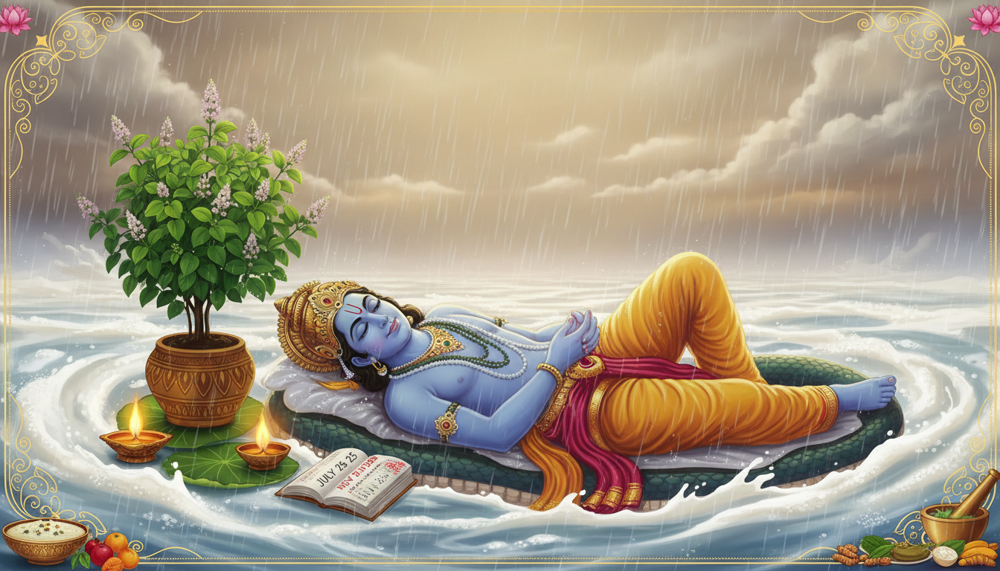

The monsoon season in the Vedic tradition marks a shift far more profound than the arrival of rains; it signals the onset of Yoga Nidra, the cosmic sleep of Lord Vishnu. As the Preserver of the Universe rests upon the serpent Shesha within the Kshirsagar (Ocean of Milk), the earthly plane enters Chaturmas—a sacred four-month window for spiritual austerity, metabolic recalibration, and deep internal reflection.

From a Vedic perspective, this period acts as a "Spiritual Shield." When the deities enter their slumber, ancient texts warn that disruptive energies and "demons" become more active on the earthly plane. By adopting specific disciplines and "slowing down," we create an energetic fortress, protecting our physical health and spiritual clarity during the unstable, damp months of the monsoon.
—
Mark Your Calendars: The Temporal Boundaries of 2026
The boundaries of Chaturmas are governed by the lunar Tithi (day), which does not align with the standard 24-hour solar day. Because the moon's orbit is elliptical, these "Chrono-Cosmic" boundaries shift based on your geographic longitude.
In 2026, the cycle begins with Devshayani Ekadashi and concludes with the awakening of the Lord on Devutthana Ekadashi.
Chrono-Cosmic Boundaries 2026
| Geographic Region | Devshayani Ekadashi Fasting Day | Devshayani Tithi Boundaries (Local Time) | Devutthana Ekadashi Fasting Day |
|---|---|---|---|
| New Delhi, India (IST) | July 25, 2026 | Starts: July 24, 09:12 AM Ends: July 25, 11:34 AM | Nov 20, 2026 |
| New York, USA (EDT) | July 24, 2026 | Starts: July 23, 11:42 PM Ends: July 25, 02:04 AM | Nov 20, 2026 |
| Milan, Italy (CEST) | July 25, 2026 | Starts: July 24, 05:42 AM Ends: July 25, 08:04 AM | Nov 20, 2026 |
| Tafuna, Am. Samoa (SST) | July 24, 2026 | Starts: July 23, 04:42 PM Ends: July 24, 07:04 PM | Nov 20, 2026 |
—
The Mythology of the Rest: Why the Lord Sleeps
The tradition of the "Sacred Pause" is rooted in Puranic legends that emphasize balance and the protection of devotees.
The Legend of Vamana and King Bali
When the demon King Bali seized control of the three worlds, Lord Vishnu incarnated as the dwarf Brahmana, Vamana. He requested three steps of land; with two steps, He covered the earth and heavens. Bali, showing ultimate surrender, offered his own head for the third. Impressed, Vishnu granted Bali sovereignty over Sutala Loka (the subterranean realm) and promised to serve as his gatekeeper. For these four months, Vishnu’s active protective energy resides in the lower realms to guard Bali.
The Dialogue of Lakshmi and Vishnu
In the Padma Purana, Goddess Lakshmi observed that Vishnu’s irregular sleep—sometimes for millions of years, sometimes not at all—disturbed the universal balance. In response, Vishnu established Alpa Nidra (Minor Sleep), a structured four-month rest. This ensures the divine and earthly planes remain synchronized, creating a period where spiritual practices are considered 100 times more powerful.
The Pandharpur Yatra
This spiritual concept finds physical form in the Pandharpur Wari. Millions of Varkari devotees walk for days across Maharashtra to reach the Vitthala (Vishnu) temple on Ashadhi Ekadashi. This pilgrimage represents the movement of the soul toward the divine before the stationary discipline of the monsoon begins.
—
The Science of the Fast: Ayurvedic and Physiological Rules
Ayurveda teaches that the lack of solar heat during the monsoon causes a decline in Jatharagni (digestive fire). This leads to the accumulation of Ama (toxic metabolic waste). To prevent disease, we avoid Viruddhahara (incompatible foods). A classic example is the ratio of Ghee and Honey: a 1:1 ratio is toxic (Viruddha), while a 2:1 ratio is safe and medicinal due to the Prabhava (specific effect).
The Four Vratas of Chaturmas
- *First Month (Shravana): Shaka Vrata***
- Exclusion: Leafy green vegetables.
- Science: High humidity and lack of UV sunlight promote bacteria, fungi, and parasites on low-lying leaves.
- *Second Month (Bhadrapada): Dadhi Vrata***
- Exclusion: Curd (Yogurt).
- Science: Curd is Abhishyandi (congesting). Humid conditions accelerate fermentation, encouraging unwholesome bacterial strains.
- *Third Month (Ashvina): Ksheera Vrata***
- Exclusion: Raw milk.
- Science: Changes in autumn pasture vegetation alter the milk’s properties, making it prone to causing mucus and congestion.
- *Fourth Month (Kartika): Dwidala Vrata***
- Exclusion: Split legumes and pulses.
- Science: These contain complex proteins and oligosaccharides that a weakened Jatharagni cannot process, leading to excessive gas and inflammation.
—
2026 Special Alignment: The Lakshmi-Narayan Portal
The year 2026 offers a rare planetary configuration. The concluding Devutthana Ekadashi falls on Friday, November 20, a day ruled by Venus (Lakshmi). This forms a Siddha Yoga, a potent connection between Jupiter (Wisdom/Vishnu) and Venus (Abundance/Lakshmi).
$$\text{Siddha Yoga} \implies \text{Jupiter (Wisdom)} \iff \text{Venus (Abundance)}$$
This "portal" is exceptionally powerful for stabilizing finances and fostering relationship harmony. It is a "self-proving" window where the union of intellect and wisdom creates a foundation for new beginnings.
—
Zodiac-Wise Remedies for the Awakening (Nov 20, 2026)
- Aries (Mesha): Offer saffron and red flowers to Vishnu for career leadership and clarity.
- Taurus (Vrishabha): Offer white sweets and a silk cloth to Tulsi for domestic luxury and peace.
- Gemini (Mithuna): Offer green cardamom and Tulsi leaves—only if picked prior to Ekadashi—to clear communication blocks.
- Cancer (Karka): Perform Abhishek of a Shaligram with raw milk and honey for emotional balance.
- Leo (Simha): Offer jaggery and yellow flowers. Crucially, donate raw wheat on the day of the Parana (Nov 21) for life stability.
- Virgo (Kanya): Donate green vegetables and stationery to students to overcome analytical roadblocks.
- Libra (Tula): Offer white sandalwood to Lord Vishnu to bring harmony to relationships.
- Scorpio (Vrishchika): Offer honey and saffron water to Tulsi to transform fears into spiritual wisdom.
- Sagittarius (Dhanu): Donate yellow fruits and turmeric to bring honor to your personal "awakening."
- Capricorn (Makara): Light a sesame oil lamp near Tulsi at twilight to alleviate Saturn’s pressure and provide career stability.
- Aquarius (Kumbha): Offer coconut water and blue flowers to assist in innovation and collaboration.
- Pisces (Meena): Perform 20 minutes of silent meditation at sunrise and offer honey to gain mental peace.
—
The Waking Ritual: Tulsi Vivah and Home Observance
The end of Chaturmas is marked by Tulsi Vivah, the marriage of the Tulsi plant (Mercury/Intellect) to the Shaligram (Jupiter/Wisdom).
Begin the Day with Prayer
Vedic lifestyle begins the moment you wake. Before your feet touch the ground, look at your palms and recite:
Karagre vasate Lakshmi, Karamadhye Sarasvati,
Karamule tu Govindah, Prabhate karadarsanam.
(Translation: Lakshmi resides at the fingertips, Sarasvati in the center, and Govinda at the base. I look at my palms in the morning to remember the Divine powers.)
Then, ask for forgiveness from Mother Earth:
Samudravasane devi, parvatastanamandite,
Vishnupatni namas tubhyam, padasparasham kshamasva me.
(Translation: O Mother Earth, spouse of Vishnu, whose robes are the oceans and bosom the mountains, forgive me for stepping upon you.)
The "Haldi-Tulsi Abundance Anchor"
On November 20, 2026, take a small piece of raw turmeric (Haldi) and tie it to a branch of your Tulsi plant with a yellow string. After the evening prayer, place this turmeric in your safe or vault. It acts as a Siddha attractor for wealth and wisdom throughout the year.
The Waking Mantras
Wake the Lord with bells and the recitation of these traditional verses:
"Uttishtha Uttishtha Govinda, Uttishtha Garuda-dhvaja
Uttishtha Kamala-kanta Trailokyam Mangalam Kuru"
(Translation: Wake up, O Govinda! Wake up, O The One Who Has a Garuda Flag, Wake up, O Lord of Lakshmi, bring auspiciousness to the three worlds.)
—
Essential Fasting Guidelines for Ekadashi
The Four Levels of Commitment
- Jalahar: Only pure water (Deep detoxification).
- Ksheerbhoji: Only milk and milk products.
- Phalahari: Fruits, nuts, and root vegetables (Avoid leafy greens).
- Naktabhoji: One meal before sunset (No grains or beans).
The Mystery of Hari Vasara
You must not break an Ekadashi fast during Hari Vasara, the first quarter of the Dwadashi Tithi. $$\text{Hari Vasara Duration} = \frac{1}{4} \times \text{Dwadashi Tithi Duration}$$
2026 Parana (Fast-Breaking) Window for Orai, India:
- Date: November 21, 2026
- Time: 01:11 PM to 03:18 PM****
(Note: Hari Vasara ends at 12:07 PM on this day. Breaking the fast earlier is incomplete and diminishes merit.)
PRO-TIP: If the Fast is Accidentally Broken
If you consume prohibited food by mistake, follow the purification protocol: Take a bath with your clothes on, perform Panchamrita Abhisheka (bathing the deity in milk, curd, honey, sugar, ghee), and recite the Kshama Yachana (apology prayer): "Mantrahinam Kriyahinam Bhaktihinam Janardana... Kshama Yachanam Samarpayami" (O Lord, my worship is lacking; forgive my errors and accept my devotion).
—
Conclusion: Takeaways for a Purposeful Year
Chaturmas 2026 is a rare opportunity for a total reset. By observing the Spiritual Discipline of the pause, the Metabolic Reset of the Four Vratas, and Conscious Action through charity, you align yourself with the cosmic rhythm.
Fasting on the November 20th awakening is said to generate merit equivalent to 1,000 Ashvamedha Yagyas. May this sacred window bring you health, prosperity, and peace.
Happy Devshayani Ekadashi.
Sources
- Chaturmas 2026: Dates, Significance, Rules & Everything You Need ...
- Devutthan Ekadashi 2026: Date, Tulsi Vivah & Parana Muhurat
- Dev Sayani Ekadashi – Date, Muhurat & Importance of Donation ...
- Devutthana Ekadashi: The Auspicious Day of Spiritual Devotion
- chatur masya viradham more details. - Brahminsnet.com - Forum
- 2026 Ekadashi Fasting days for Orai, Uttar Pradesh, India - Drik Panchang
- Devshayani Ekadashi 2026: Date, Vrat, and Ashadhi Ekadashi - Rudraksha Ratna
- 2026 Ekadashi Dates - Ekadasi Fasting Days | PDF | Ancient Astronomy - Scribd
- practice of sandhya-vandana - Online Darshan
- Venkateshwara Suprabhatam Lyrics | PDF | Hindu Mythology | Vaishnavism - Scribd
- Ekadashi Puja – Spiritual Significance & Benefits - Krishnayan
- Wedding Dates 2025 & 2026 as per Hindu Calendar with Shubh Muhurat - NTP Tourism Affairs Ltd
- Devutthana Ekadashi 2026 - Muhuratam
- 2026 Devshayani Ekadashi fasting date for Atlanta, Georgia, United States - Drik Panchang
- Devshayani Ekadashi 2026 - Muhuratam
- Chaturmasya Vrata: Rules and Restrictions | PDF | Puranas - Scribd
- Food Incompatibility in Ayurveda - Ayurroots
- Food Combinations to Avoid as per Ayurveda for Vata, Pitta, Kapha - The Ayurvedic Institute
- Ayurveda and Frozen Foods: What You Need to Know - Art of Living Retreat Center
- Ayurvedic Diet: The Truth - Jivita Ayurveda
- Daan - Path To Positivity and Purity | PDF | Dharma | Righteousness - Scribd
- Ayurvedic Diet - Sharda World School
- Avani Avittam Special – Suprabhatham and Sandhyavandanam - Sage of Kanchi
- Devshayani Ekadashi 2026: Date, Rituals & Significance
- 2026 Devshayani Ekadashi fasting date for Naperville, Illinois, United States - Drik Panchang
- 2026 Devshayani Ekadashi fasting date for Piura, Piura, Peru - Drik Panchang
- 2026 Devshayani Ekadashi fasting date for Peoria, Illinois, United States - Drik Panchang
- 2026 Devshayani Ekadashi fasting date for The Bronx, New York, United States - Drik Panchang
- Devshayani Ekadashi 2026 - Muhuratam
- 2026 Devshayani Ekadashi fasting date for Milan, Lombardy, Italy - Drik Panchang
- Devutthana Ekadashi 2026 - Muhuratam
- 2026 Ekadashi Fasting days for Tafuna, Western District, American Samoa - Drik Panchang
- 2026 Devshayani Ekadashi fasting date for Potomac, Maryland, United States - Drik Panchang
- 2026 Devshayani Ekadashi fasting date for Kelowna, British Columbia, Canada - Drik Panchang
- 2026 Devshayani Ekadashi fasting date for Oakleaf Plantation, Florida, United States - Drik Panchang
- 2026 Devshayani Ekadashi fasting date for Grandville, Michigan, United States - Drik Panchang
- 2026 Ekadashi Fasting days for Rose Belle, Grand Port, Mauritius - Drik Panchang
- 2026 Ekadashi Fasting days for Bara Uchana, Haryana, India - Drik Panchang
- 2026 Ekadashi Fasting days for Sulur, Tamil Nadu, India - Drik Panchang
- 2026 Devshayani Ekadashi fasting date for Louisville, Kentucky, United States - Drik Panchang
- 2026 Devshayani Ekadashi fasting date for Jorhat, Assam, India - Drik Panchang
- Auspicious Dates for Property Registration in 2026 - MagicBricks
- Sacred Rituals & Devotion of India by Dharmikvibes - Substack
- Jain Calendar 2021: Jain Holidays 2021 Dates & Festivals - AstroSage
- Devshayani Ekadashi 2026 - Muhuratam
- Ekadashi Tithi 2026 Dates List: Fasting Calendar and Timings May 30, 2026, Saturday - Astroyogi.com
- Ekadashi 2026: Date, Time, Puja Rituals and Significance - GaneshaSpeaks
- Indian first – Expressing what one feels
- Sabudana Vada Recipe - The Mad Scientists Kitchen
- Source 51
- 2026 Devshayani Ekadashi fasting date for Concepcion, Biobio, Chile - Drik Panchang
- 2026 Devshayani Ekadashi fasting date for Mejicanos, San Salvador, El Salvador - Drik Panchang
- Waking Deities At Temple - ISKCON Desire Tree | IDT
- Deity Worship | website - Wix.com
- Tips - Fasting and Feasting Then Amp Now | PDF - Scribd